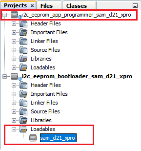
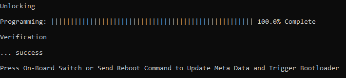
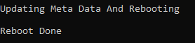

Building and Running the I2C EEPROM Bootloader applications
Downloading and building the application
To clone or download this application from Github,go to the main page of this repository and then click Clone button to clone this repo or download as zip file. This content can also be download using content manager by following these instructions
Path of the application within the repository is apps/i2c_eeprom_bootloader/
To build the application, refer to the following table and open the project using its IDE.
Bootloader Application
| Project Name | Description |
|---|---|
| bootloader/firmware/sam_d21_xpro.X | MPLABX Project for SAM D21 Xplained Pro Evaluation Kit |
Programmer application
| Project Name | Description |
|---|---|
| app_programmer/firmware/sam_d21_xpro.X | MPLABX Project for SAM D21 Xplained Pro Evaluation Kit |
Setting up SAM D21 Xplained Pro Evaluation Kit
- To run the demo, the following additional hardware are required:
-
One EEPROM 3 Click board
-
One mikroBUS Xplained Pro board
-
-
Install the EEPROM 3 Click on to the mikroBUS Xplained Pro board
-
Connect mikroBUS Xplained Pro board to the EXT2 header
- Connect the Debug USB port on the board to the computer using a micro USB cable
Setting up the host script
- Refer to UART Host Script Help for setting up the uart_host.py utility used to send the application binary from host PC
-
There will be no reset command sent from host after programming by default.
-
Reboot command has to be sent separately only after successful programming to trigger bootloader from programmer application
-
Running the Application
-
Open the bootloader project bootloader/firmware/sam_d21_xpro.X in the IDE
- Make sure that the app_programmer/firmware/sam_d21_xpro.X is added as a loadable project to bootloader application
- As the I2C EEPROM may not have any valid binary required by bootloader for the first time, Adding the app_programmer as loadable allows MPLAB X to create a unified hex file and program both these applications in their respective memory locations based on their linker script configurations

-
Build and program the bootloader application using the IDE
- Once programming is done bootloader starts execution and directly jumps to application space to run the programmer application
- LED0 starts blinking every 500ms indicating that the programmer application is running
-
Open the programmer application project app_programmer/firmware/sam_d21_xpro.X in the IDE
-
Update app_programmer/firmware/src/app.c to reduce the LED blink duration from 500ms to 100ms as below
APP_TIMER_DelayMs(100); -
Clean and Build the project to generate the binary (Do not program the binary)
-
Run the uart_host.py from command prompt to program the updated programmer application binary in I2C EEPROM
python <harmony3_path>/bootloader_apps_serial_memory/tools/uart_host.py -v -i <COM PORT> -d samd2x -a 0x2000 -f <harmony3_path>/bootloader_apps_serial_memory/apps/i2c_eeprom_bootloader/app_programmer/firmware/sam_d21_xpro.X/dist/sam_d21_xpro/production/sam_d21_xpro.X.production.bin - Following snapshot shows output of successfully programming the programmer application
- LED0 should still be blinking every 500ms

-
Run the uart_host.py from command prompt to send a Reboot command. This command Updates MetaData and triggers Bootloader to program the updated binary from I2C EEPROM to Internal Flash
python <harmony3_path>/bootloader_apps_serial_memory/tools/uart_host.py -v -i <COM PORT> -r
- Once Firmware Update is successful LED0 should start blinking every 100ms indicating updated programmer application running
- If there was any error you may need to power cycle the device to retry firmware upgrade
-
Update app_programmer/firmware/src/app.c to revert LED blink duration to 500ms from 100ms as below
APP_TIMER_DelayMs(500); -
Clean and Build the project to generate the binary (Do not program the binary)
- Repeat Step 8-9.
- You should see LED0 still blinking every 100ms
-
Press the Switch SW0 to Update MetaData and trigger Bootloader to program the updated binary from I2C EEPROM to Internal Flash
- Once Firmware Update is successful LED0 should start blinking every 500ms indicating updated programmer application running
- If there was any error you may need to power cycle the device to retry firmware upgrade
Additional Steps (Optional)
- To bootload any other application refer to Application Configurations
- Note that this application should have programming capabilities to I2C EEPROM
- Once done repeat the applicable steps mentioned in Running The Application